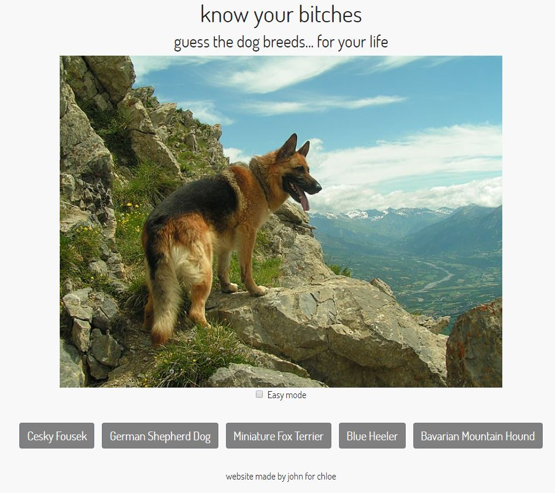
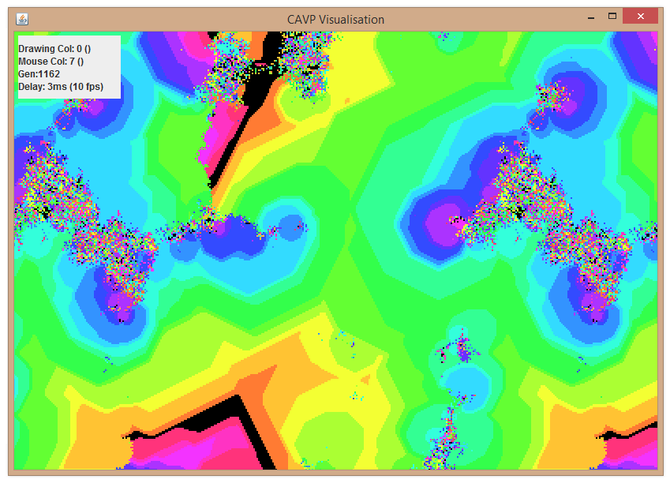
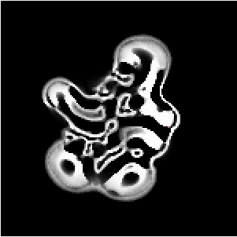

Visualisations
For personal projects, I've make procedurally generated visual programs. These have written in with GLSL, Unity, Processing, and other frameworks
A stupid website I made in under 2 hours to help my friend get better at identifying dog breeds.
The CAVP
The Cellular Automata Visualisation Program (CAVP) was made as part of my university dissertation. It looked to study cellular automata, which are a family of theoretical computing models. Full dissertation.
 Mímir
Mímir is an intelligent Mathematics education system aimed for GCSE to A Level students, developed by myself and a team of three other Warwick students. We developed a system which, given a question and an incorrect answer, can work out what steps the user took in order to get to that incorrect answer, and so identify what step the student is stuck at. We were awarded the JISC Summer of Student Innovation grant in 2013. After a working prototype was developed, the project was put on hiatus in order to focus on our studies.
The following was our video pitch, when the project was originally called "Sigma":